בדיקה מקיפה של 9 מסכים: היכן הדסקטופ-לוגיק נשבר במובייל, ואיך לעצב מחדש כל סקשן כדי לעבוד באגודל אחד — עם המרות גבוהות יותר ועומס קוגניטיבי נמוך יותר.
הדפוסים האלה לא של מסך בודד — הם של כל המערכת. תקנו אותם פעם אחת ברמת ה-design system, התיקון יחלחל לכולם.
Split-screen 50/50, כותרת ענקית בצד ימין וטופס בצד שמאל — במובייל זה הופך לסטאק עם 1.5 מסך גלילה לפני שמגיעים לפעולה.
הכפתור הראשי לא נשאר ב-thumb zone (השליש התחתון). המשתמש צריך למתוח אגודל / לאחוז ביד שנייה.
קלטים ברוחב 800px בדסקטופ הופכים לקלטים ברוחב מסך מלא ללא breathing room; קצוות נדבקים לטלפון.
כותרות 32px ותתי כותרות 14px יוצרים נפילה חדה; גודל ממוצע (16–18) חסר לקריאה רגועה.
בכל מסך פעולה (Login, Onboarding, Workout) הכפתור הראשי לא נעול לתחתית — גולש עם התוכן.
Workout = כל הימים על מסך אחד. במובייל זה 6+ גלילות רציפות בלי קצב או נשימה ויזואלית.
הניווט בצד (Dashboard) חייב להיות Bottom Tab Bar במובייל. כרגע צפוי שיהפוך ל-Hamburger — חוויה גרועה.
קלטים בגובה ~48px נראים סבירים אך type="email" / inputMode / autocomplete חסרים — מקלדת לא מותאמת בעת ההקלדה.
"+10,000 ספורטאים", "★ 4.8" מופיעים אחרי הטופס. במובייל הם נדחקים מתחת לקיפול — אפס תועלת ב-CRO.
המסך הראשון שהמשתמש רואה. הזדמנות יחידה לבסס אמינות ולתת תחושה של אפליקציה איכותית.
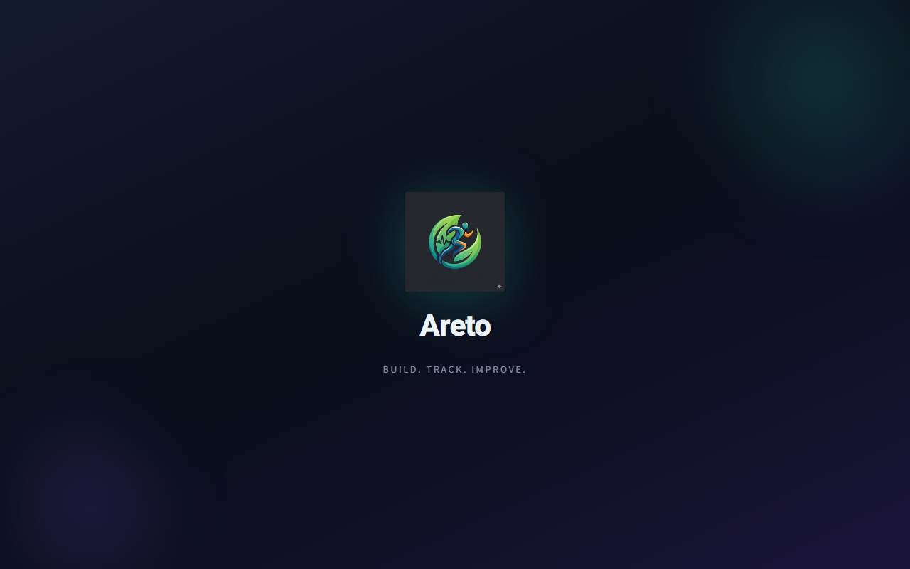
Splash שמרגיש "ריק" בשנייה הראשונה יוצר תחושה של אפליקציית חינם / לא-מקצועית — לפני שבכלל ראו ממשק. במובייל זה חשוב הרבה יותר מבדסקטופ כי הטעינה ארוכה יותר.
המסך הקריטי ביותר ל-CRO. כל איבוד פוקוס פה = משתמש שלא חוזר.
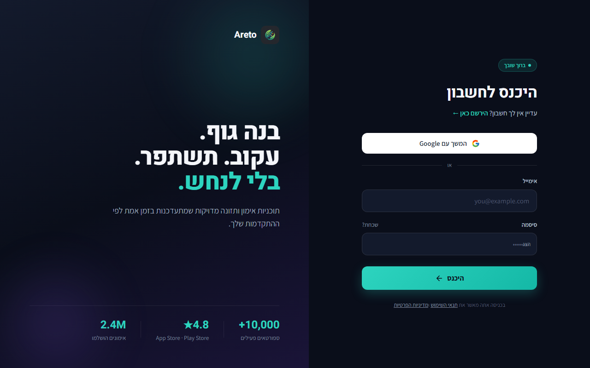
Drop-off של 25–40% בלוגין מתרחש בדיוק כאשר משתמש חוזר רואה תוכן שיווקי לפני הטופס. במובייל עם יד אחת — כל גלילה נוספת מורידה את ההסתברות שיגיע ל-CTA.
בנוסף, ה-Hero טקסט גדול ושיווקי מבלבל את ההיררכיה: המוח חושב "נחתי בלנדינג פייג'" במקום "אני במסך לוגין".
מסך עזר — אבל קריטי. כשלון פה = משתמש מאבד גישה לחלוטין.
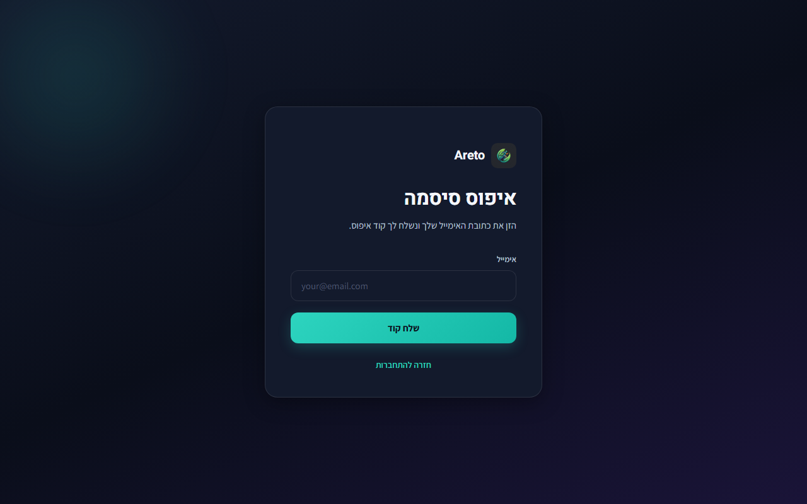
איפוס סיסמה הוא רגע של תסכול מראש. כל חוסר בהירות מכפיל אותו. המסך הזה צריך להרגיש קצר, ברור ומרגיע.
נקודת הכניסה הראשית למשתמש חדש. כאן השקעת ב-Trust בהכי הרבה — וכאן זה הכי חסר.
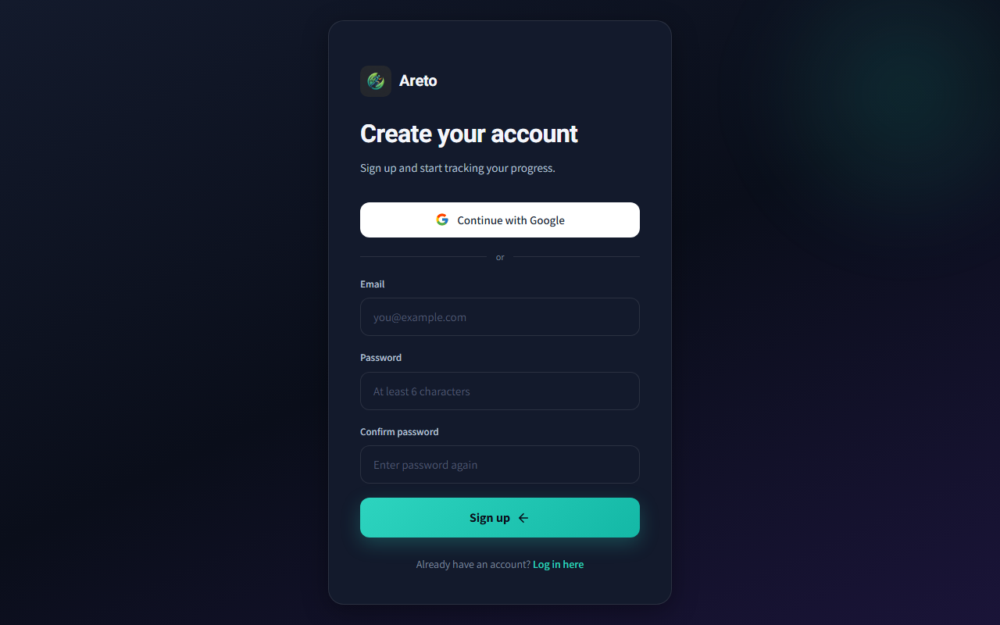
מסך הרשמה במובייל מתפקד כ-conversion funnel קצר. כל חיכוך = drop. כפילות של סיסמה לבדה מורידה המרות ב-10–15%. שפה לא עקבית פוגעת באמון באופן מיידי.
4 שלבים על דף אחד = drop-off מהקצוות. צריך פירוק.
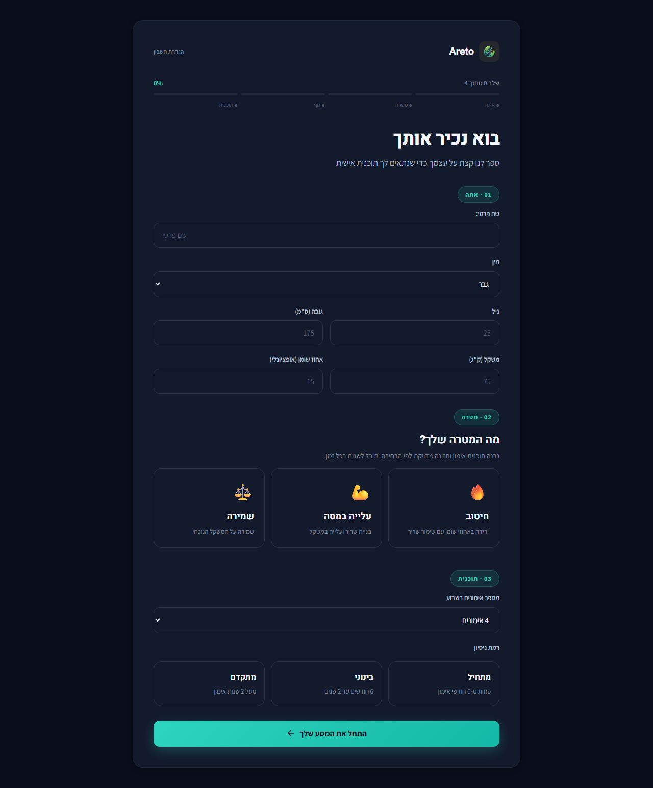
כלל ה-One Decision Per Screen. במובייל, מסך אחד = שאלה אחת. כשמעמיסים 4 שלבים, המוח עובר ל-"avoidance mode" — הוא רואה את העומס לפני שמתחיל למלא. ב-CRO אקדמי, פיצול של form ארוך ל-screens קצרים מעלה השלמה ב-20–35%.
💡 פיצול ל-4 מסכים נפרדים מעלה השלמת אונבורדינג בממוצע ב-25-35% — בעיקר כי תחושת ה"קרוב לסיום" נשמרת לאורך כל הדרך.
המסך שמשתמש רואה הכי הרבה. כל מילימטר חשוב.
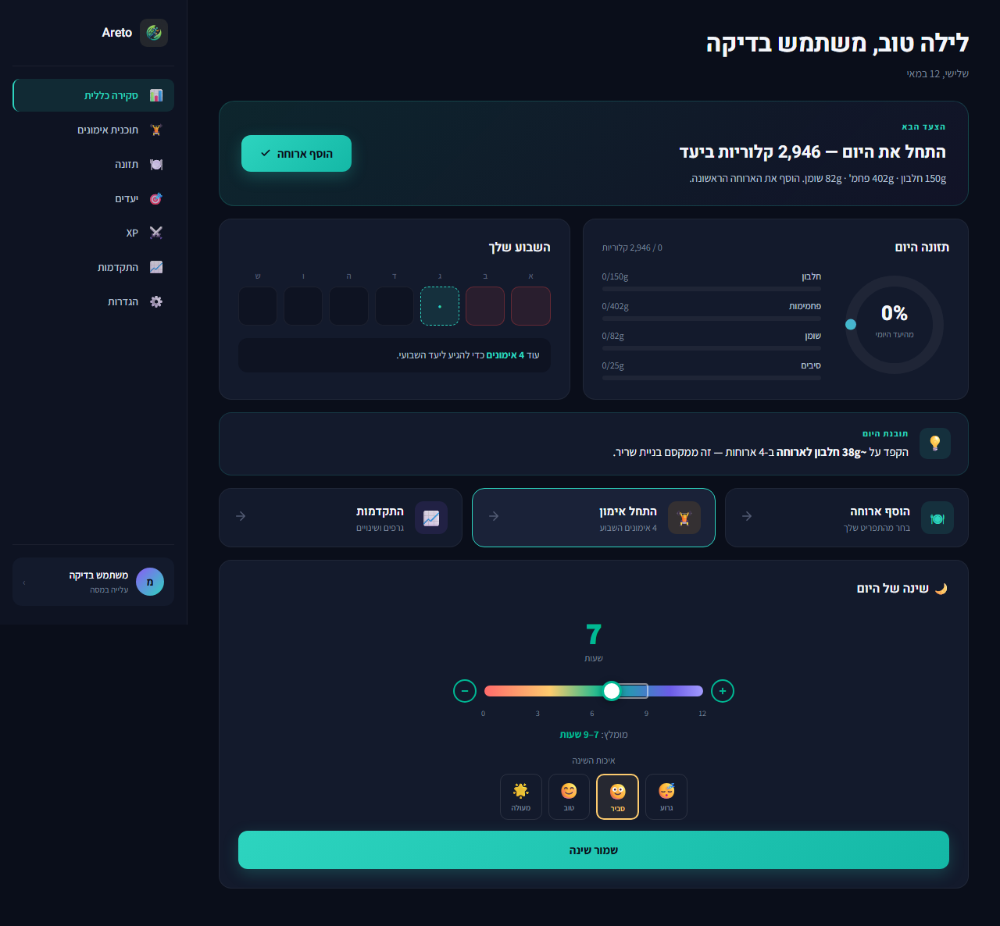
Dashboard הוא מסך של הרגל יומי. אם בכל פתיחה צריך לסרוק 6 סקשנים, המוח עובד יותר מדי. המטרה היא שהמשתמש יראה תוך 0.5 שניות: "מה אני צריך לעשות עכשיו?".
הסקרין הכי עמוס באתר. במובייל = 6+ גלילות רציפות לפני סוף הרשימה.
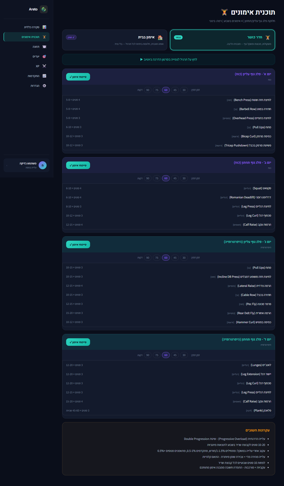
במובייל, כשמשתמש פותח "תוכנית אימונים" הוא רוצה 95% מהזמן את אימון היום. כל פעם שאני נאלץ לגלול עד היום הנכון = חיכוך. החזרתיות של גלילה ארוכה גורמת לאנשים לזכור את האפליקציה כ"איטית/מסורבלת" גם אם היא לא.
המסך הראשון של תזונה. ה-Empty state יקבע אם המשתמש ימשיך או יזרוק.
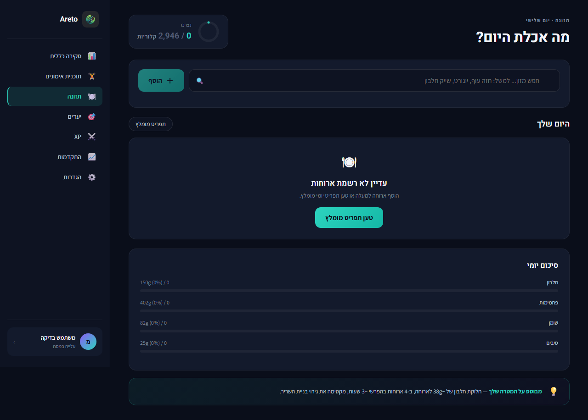
Empty state במובייל הוא רגע הקריטי ביותר ב-onboarding-as-product. ראיית 4 פסים של 0% גורמת לתחושת "מרחק עצום מההצלחה". המוח מפרש זאת כ-"זה ייקח לי שעות".
מסך אנליטי-רגשי. המספרים מספרים את "איך אני בדרך".
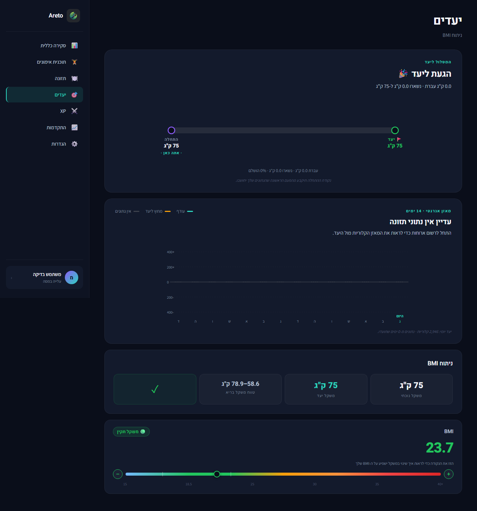
מסך יעדים הוא רגשי לפני שהוא אנליטי. כשמשתמש רואה "0%" ו-"0 ימים שתועדו" — הוא מרגיש "אני לא ב-track". במובייל זה מועצם כי המסך כולו נראה ריק.
המסך הכי "משחקי". פוטנציאל ענק להתמכרות — מנוצל חלקית.
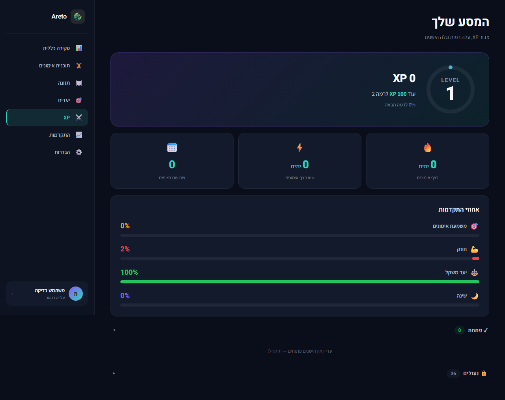
Gamification פועלת על dopamine loop קצר: ראייה ברורה של ה-step הבא + תחושת התקדמות. כשמשתמש רואה רק "0/0/0" + 36 נעולים — המנגנון נפגם. הוא מרגיש רחוק מכל ההישגים, לא קרוב ל-1 מהם.
מסך analytics. ריק במצב הראשון, צריך לנחות יפה.
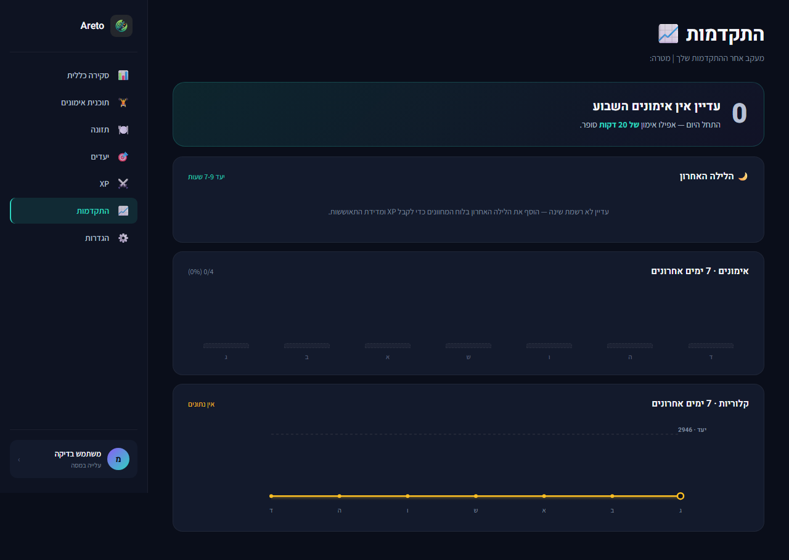
Progress screen ריק = "אני מאחור". זה לא נכון! המשתמש פשוט עוד לא תיעד. הניסוח והוויזואל צריכים להעביר "התחל את הראשון" ולא "אתה לא עומד ב-X".
Sidebar בתוך sidebar — anti-pattern דסקטופי. במובייל זה מתפוצץ.
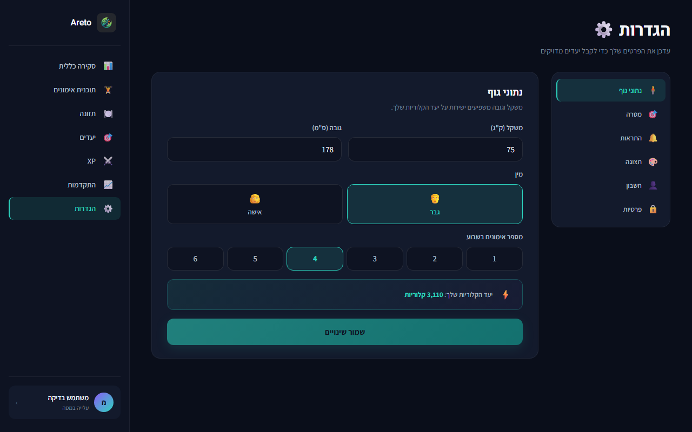
הגדרות לא נפתחות כל יום, אבל כשנפתחות — המשתמש מחפש משהו ספציפי. במובייל, sub-navigation בצד הופך לחווית "איפה זה?" ארוכה. סטנדרט iOS/Android: list view עם section groups, push לדף פנימי, navigation שמרגישה native.
Modals משפטיים. רוב משתמשים יסגרו — אבל מי שיקרא יחליט אם לסמוך עליך.
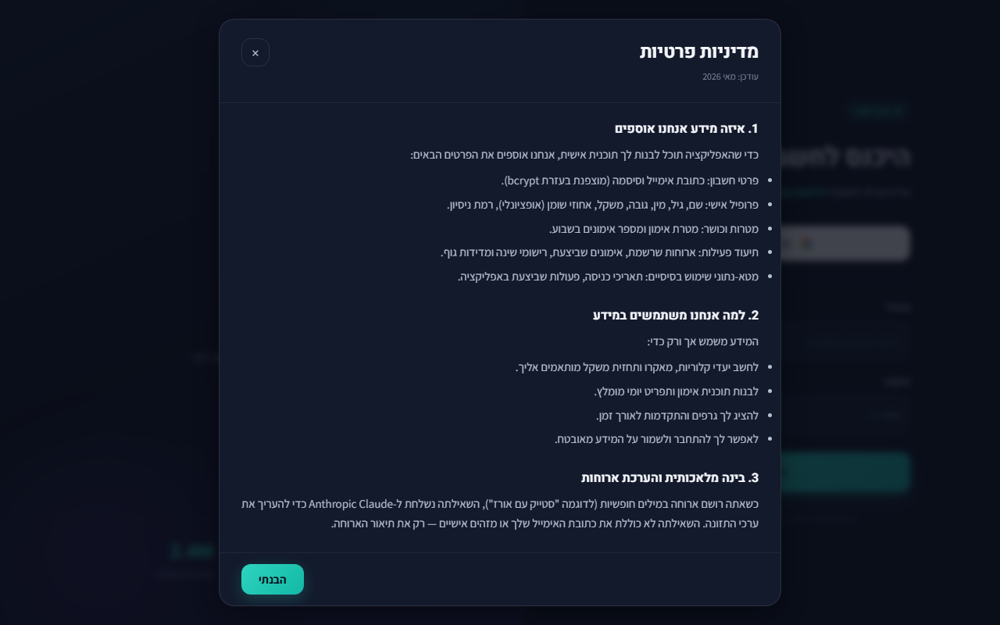
Trust signals = legal docs. אם הם נראים זרוקים → אמון נמוך. אם הם נגישים וברורים → אמון גבוה. במובייל, גלילה אינסופית של legalese שווה ל-"זה לא מקצועי".
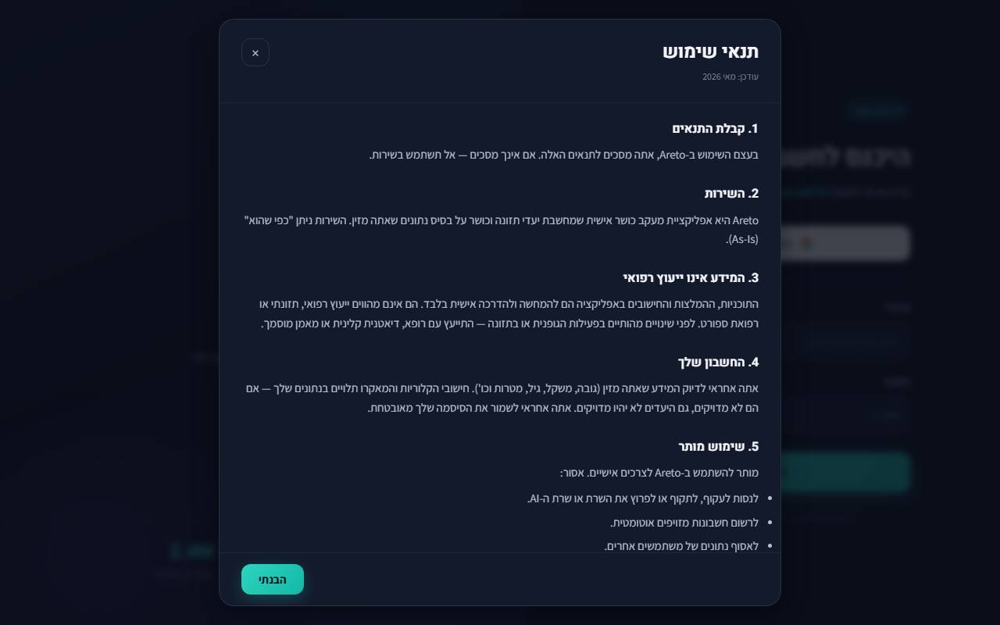
תנאי שימוש סובל מאותן בעיות בדיוק כמו מדיניות פרטיות. החל את אותו דפוס:
💡 טיפ נוסף: ב-section "3. המידע אינו ייעוץ רפואי" — הוסף disclaimer קצר ב-Onboarding עצמו (לפני יצירת התוכנית), לא רק כאן. רוב המשתמשים לא יקראו את זה ולכן ה-disclaimer חייב להופיע גם ברגע הקריטי.
מה צריך לטפל בו ראשון. כל אחד מהם פוגע ב-conversion או retention באופן מדיד.
4 שלבים פתוחים במקביל גורמים ל-drop-off של ~30% מהמשתמשים החדשים לפני הצעד הראשון.
SCR-06ההירו השיווקי דוחה את הטופס מתחת לקיפול. משתמש חוזר מתבלבל "האם זה לנדינג?".
SCR-014 ימים שלמים פתוחים זה מתחת לזה. אין "מה היום" — חיכוך יומיומי גבוה.
SCR-09Sidebar שמאלי לא ישרוד למובייל. בלי tab bar = הסתרה של פיצ'רים מרכזיים.
SCR-08Register באנגלית, שאר האפליקציה בעברית. שבירת אמון בנקודה הכי רגישה ל-CRO.
SCR-046 sub-tabs בצד ימני בתוך עמוד דסקטופי. במובייל זה נשבר לחלוטין — צריך native list view.
SCR-145 ארוחות עם 7+ ידיעות מידע כל אחת, כולן באותו משקל ויזואלי. ה-"ארוחה הבאה" לא בולטת.
SCR-15סדר עדיפויות לפי ROI: השפעה ÷ מאמץ. אם תספיק לבצע רק 5 דברים — אלה הם.
אחד לשלב + progress bar. צפי לעלייה של +25–35% בהשלמת onboarding.
+ ROI ★★★★★5 טאבים גלובליים (דשבורד · אימונים · תזונה · התקדמות · פרופיל). שיפור Navigation X3.
+ ROI ★★★★★Login · Register · Onboarding · Workout. כפתור 56px שלא זז עם גלילה. +10–15% המרות.
+ ROI ★★★★Tabs/swipe בין ימים, FAB "התחל אימון". משתמש מוצא היום הנוכחי תוך 0.5 שניות במקום 5.
+ ROI ★★★★במקום 6 סקשנים שווי-משקל — פעולה אחת בולטת (אימון/ארוחה/שינה) לפי שעה ביום.
+ ROI ★★★★לא בעיה אחת — אלא דפוס.
Split-screen של Login, Sidebar של Dashboard, Grid 3 עמודות במטרות, 4 ימים זה מתחת לזה ב-Workout — כל אלה דפוסים שעובדים ב-1440px ומעלה ונשברים ב-375px.
לתקן: לעצב Mobile-First, להעלות לדסקטופSidebar עובד בדסקטופ. במובייל הוא נעלם או הופך ל-Hamburger — שזה anti-pattern. כל אפליקציית מובייל מצליחה (Strava, Nike, Apple Fitness) משתמשת ב-Bottom Tab Bar.
לתקן: 5-tabs קבועיםהכפתורים הראשיים גולשים עם הדף. ב-iPhone 15 Pro Max אגודל לא מגיע לחלק העליון של המסך. כפתור באמצע = משתמש מסובב טלפון או מחזיק ב-2 ידיים.
לתקן: Sticky bottom 56pxמסך אונבורדינג מציג 4 שאלות במקביל. Dashboard מציג 6 סקשנים. עומס קוגניטיבי תוקף את המשתמש לפני שהוא מתחיל לפעול.
לתקן: פיצול מסכים, hero אחד"שכחת?", "חזרה להתחברות", tag-ים של "[חזה]/[גב]", chips של זמן מנוחה — קטנים מהמינימום שאפל וגוגל מגדירות כ-accessible touch target.
לתקן: padding 12px סביב כל אינטראקציהאין הבדל ויזואלי בין סקשנים בעלי משקל שונה. ב-Workout כל יום נראה זהה לקודמו; ב-Dashboard כל card נראה כמו חברו. למשתמש קשה להבין "מה ראשי, מה משני".
לתקן: דגשי טיפוגרפיה + צבע + סקיילהאפליקציה נעימה ויזואלית ויש לה אסתטיקה ברורה — אבל היא בנויה מהפרספקטיבה של דסקטופ. מסכים שנראים נהדר ב-1440px מאבדים את הרוטינה הנכונה ב-375px. השינוי הכי חשוב הוא לא של "צבע" או "פונט" — אלא של היררכיה: מה ראשון, מה שני, ואיפה האגודל נח.